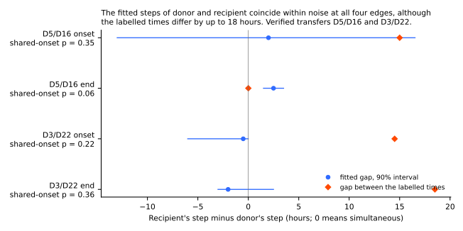
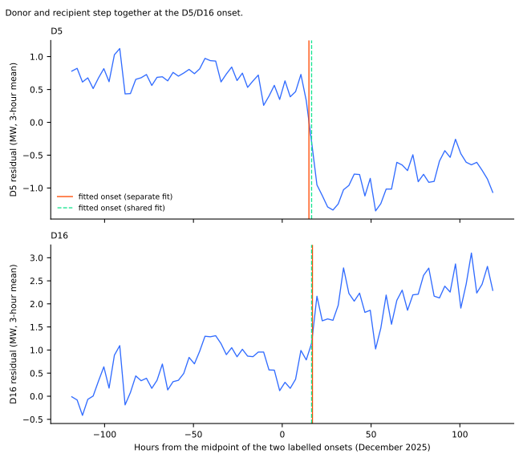
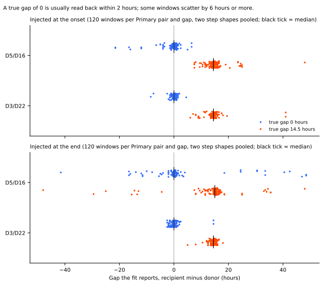
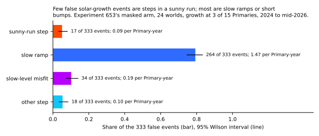
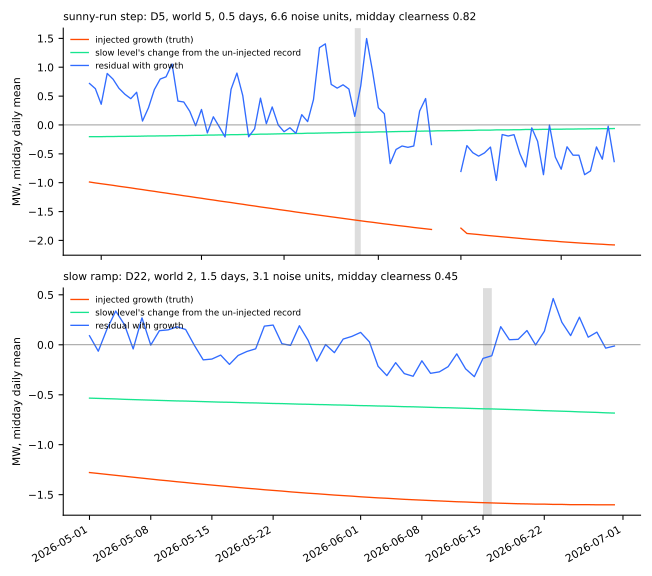
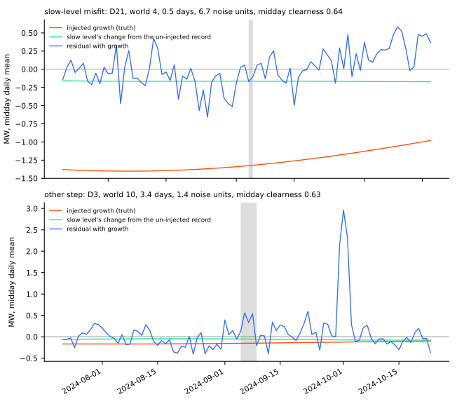

Do the donor and the recipient of a load transfer start together, and what kind of false event does solar growth cause in the event table?
At D3/D22 the donor and the recipient step together, and at D5/D16 the two ends start within 2.5 hours of each other, although the D5/D16 onset is too noisy to exclude a lag of 15 hours. The recipient lag of 14.5 and 15 hours that experiment 660 reported is the gap between the two Primaries' labelled times. The fitted gaps are 2.0 hours at the D5/D16 onset, 2.5 hours at its end, −0.5 hours at the D3/D22 onset, and −2.0 hours at its end. Of the 333 false events that injected solar growth causes, few are abrupt steps inside a sunny run, but half last 3 days or less. A composite capacity curve for slow drift would therefore remove fewer false events than the ramp share suggests.
Check 1 asks whether the two ends of a verified transfer start together. A transfer happens when an operator switches a circuit from one Primary substation (the donor) to a neighbour (the recipient). The answer decides how tightly a detector may require the two steps to coincide. Check 2 asks what kind of false event solar growth causes in the event table of experiment 653. A "world" is a copy of the real power record with solar growth injected at 3 Primaries. The "slow level" is the smooth seasonal level the detector subtracts before it looks for events. An "onset" is the start of a transfer and an "end" is its finish. "ERA5" is a weather reanalysis, and "NGED" is the distribution network operator.
The verdict is partly supported, and the decision rule does not produce it by itself. Prediction P1 (a recipient lag of 12 hours or more) is not supported: the fitted gaps are 2.0 and −0.5 hours at the onsets. Prediction P2 (the fit recovers a true gap of 0) fails at D5/D16, where 83% of the injected windows at the onset and 75% at the end fall within 4 half-hours, against the 90% bar. Prediction P3 (most false events are slow ramps or misfits, under a third are sunny-run steps) is supported on the pre-registered definition. The plan gives no rule for combining the three, so the verdict is a judgement. Because P2 fails at D5/D16, the D5/D16 gaps are reported as measurements with their intervals and not as findings. Each section says how far its definition matters.
Figures

Figure 1 shows that the fitted gap is within 2.5 hours of zero at all four edges, while the labelled gap is 14.5 to 18.5 hours at three of them and 0 at the fourth. The dot is the fitted gap (recipient minus donor) and the line is a 90% interval from resampling whole days. The interval at the D5/D16 onset is wide (−13.0 to 16.5 hours), so that edge alone cannot exclude a lag of 15 hours. The other three intervals can. The D5/D16 end interval (1.5 to 3.5 hours) excludes 0, so that end shows a small lag.

Figure 2 shows the D5/D16 onset in the data. Both Primaries step within a few hours of one another, and the step fitted separately for each Primary falls beside the step fitted jointly.

Figure 3 shows what the fit reports when the true gap is known. A gap of 0 is read as within 2 hours in most windows, but a few windows scatter by 6 hours or more, most at D5/D16. A gap of 14.5 hours is read back with a median of 14.5 to 15 hours. Each dot is one of 120 windows (two step shapes pooled).

Figure 4 shows the class of the false events. The ramp class is the largest, and it mixes slow ramps with short bumps (see the post hoc bullets below).


Figures 5 and 6 show one example of each class, each the event whose size is nearest its class's median size. The grey band marks the false event, the orange line is the injected growth (negative, because it lowers the residual), and the green line is the change in the slow level. The slow level follows only a fraction of the midday-only growth in every example.
Results
Check 1, fitted gap (hours) and test of one shared onset. Window: 5 days either side of the midpoint of the two labelled edges. "Statistic" is twice the log likelihood ratio of separate against shared onsets, computed per Primary; a ratio of 4 is 2.77. The p-value is from a day-block bootstrap under the shared model (300 draws).
| Edge | Labelled gap | Fitted gap (90% interval) | Statistic | Bootstrap p |
|---|---|---|---|---|
| D5/D16 onset | 15.0 | 2.0 (−13.0 to 16.5) | 0.32 | 0.35 |
| D5/D16 end | 0.0 | 2.5 (1.5 to 3.5) | 43.8 | 0.06 |
| D3/D22 onset | 14.5 | −0.5 (−6.0 to 0.0) | 2.79 | 0.22 |
| D3/D22 end | 18.5 | −2.0 (−3.0 to 2.5) | 1.66 | 0.36 |
- Method check P2 fails at D5/D16 and passes at D3/D22. With a true gap of 0, the fitted gap lies within 4 half-hours in 83% (onset) and 75% (end) of 120 windows at D5/D16, against the 90% bar, and in 97% and 95% at D3/D22. At D5/D16 the fit reports a gap of 6 hours or more in 7.5% (onset) and 18% (end) of windows. Both a constant step and a step that follows the donor's profile give the same shares.
- A gap of 14.5 hours is detected. With a true gap of 14.5 hours, the statistic exceeds 2.77 in all 120 windows of every pair and edge, and the fitted gap is within 2 hours of the truth in 67% to 95% of them.
- The likelihood-ratio cut-off of 4 is too eager. The statistic exceeds 2.77 in 25% to 32% of windows with a true gap of 0, so a rule of "ratio under 4 means simultaneous" would reject a truly simultaneous transfer about 3 times in 10. The bootstrap null is the calibrated test. The D5/D16 end has a statistic of 43.8, which sits at the 95th percentile of its own bootstrap null (44.9).
- The labelled gap is not a fitted lag. Experiment 660 fitted each Primary in its own window and searched 24 hours either side of its labelled time. Adding each Primary's fitted shift to its labelled time gives recipient lags of 0.5 hours (D5/D16 onset), 2.0 (D5/D16 end), −0.5 (D3/D22 onset), and 18.5 (D3/D22 end). The last equals the labelled gap because both of its shifts sat at the limit of the search, and four of its eight shifts did.
- Post hoc, constant-MW steps only (
constant_only.json): the fitted gaps are 0.5, 2.0, −0.5, and −0.5 hours at the four edges, so allowing a profile-shaped step does not explain the finding.
Check 2, classes of the false events. The 24 worlds (worlds 0 and 1 reproduce experiment 653's 5 and 9 false events) hold 333 false events, or 1.85 per injected Primary-year (95% interval 1.06 to 2.86 from resampling worlds), against experiment 653's 0.93 on its two worlds.
| Class (first match) | Events | Share (95% interval) | Per Primary-year (95% interval) |
|---|---|---|---|
| Sunny-run step | 17 | 0.05 (0.03 to 0.08) | 0.09 (0.05 to 0.14) |
| Slow ramp (rise over more than 1 day, or not complete in 14) | 264 | 0.79 (0.75 to 0.83) | 1.47 (0.79 to 2.36) |
| Slow-level misfit | 34 | 0.10 (0.07 to 0.14) | 0.19 (0.08 to 0.32) |
| Other step | 18 | 0.05 (0.03 to 0.08) | 0.10 (0.06 to 0.14) |
- P3 is supported on the pre-registered definition. Slow ramps and misfits are 0.89 of the events (0.83 to 0.93 from resampling worlds), and sunny-run steps are 0.05 (0.03 to 0.09).
- Post hoc, the ramp class is mostly not a slow ramp. Of the 333 events, 167 have no completed edge on the midday series, and 173 (52%, interval 47% to 57%) last 3 days or less. Only 97 (29%) are ramps that complete over more than 1 day.
- Post hoc, a loose reading of "sunny run" gives a different answer. Of the 333 events, 122 (37%, 32% to 42%) start in a run whose first 3 days have a midday clearness of 0.7 or more. Under the pre-registered definition only the 17 with a step-like edge count. The page does not decide which reading the detector needs.
- Daily shape. The median share of an event's megawatts that falls between 10:00 and 15:00 UTC is 0.26 to 0.29 for the sunny-run, ramp, and misfit classes. A constant step would give 10 of 48 half-hours, 0.21, so the events are only weakly midday-shaped.
- Season boundaries. Of the 333 events, 20 start within 14 days of 1 April or 1 October.
Caveats
- Two verified transfers are the only real evidence for check 1. The D5/D16 onset interval is wide, so a lag of about 15 hours is not excluded there. The result is consistent with simultaneity at four edges and cannot prove it.
- The injection check scores the method on residual windows that NGED's logs call event-free. The logs are incomplete, so some windows may hold an event, which would widen the scatter.
- The edge width in check 2 has a resolution of 1 day (daily mean of the midday half-hours), so a step of 1 hour is not separated from a step of 1 day. The sunny-run clearness uses ERA5 shortwave, a recorded product, not CAMS.
- Solar growth is injected, not real. The injected growth is a midday-only term of 0.2 to 1.0 MW per year at 3 Primaries per world, so the false-event rate describes experiment 653's masked arm under that injection only.
- Unlogged events. NGED says its logs may miss load-shift events, so the real-record windows here may hold unlabelled events, and the injected-window scatter is a lower bound.
What the next experiment should answer
- Does a detector that requires both ends to coincide within about 4 half-hours cut the false-transfer share? The tolerance should be tested on injected worlds, because the fit misplaces some true simultaneous steps by 6 hours or more at D5/D16.
- How many of the short bumps in check 2 are a sunny day or two rather than solar growth? A placebo with solar growth removed would count the short bumps the slow level cannot explain.
Checks
- Median minus mean forecast, and error of the mean beside each quantile-score contrast: not applicable, because this experiment trains and scores no forecast.
- Audit triggers: none of the seven apply (no forecast, no leakage path, no tuned threshold read from the scored rows).
- Reviews: a fresh Sonnet agent reviewed the code before the scored run, and another reviewed the numbers and the prose.
- Final-test window: never read. All windows and worlds end before 2026-07-01.
- Standing practices: no forecast is trained, so monthly refits, saved models, tail scores, and curtailment cost do not apply. D18's rows before 2025-03-01 are dropped as in experiment 653.
Files
ml-experiments/00686-event-table-transfer-timing-and-false-solar-growth-events/e00686_timing.py: check 1, the fits, the bootstrap, and the injection check. Imports the folder of experiment 660..../e00686_false_events.py: check 2, the re-injection of the solar-growth worlds and the per-event measurements. Imports the folders of experiments 653 and 657..../e00686_constant_only.py: the post hoc refit of the four edges with constant-MW steps..../e00686_classes.py: assigns the classes and prints the shares and rates..../e00686_figures.py: draws the six figures.data/ml-experiments/00686-event-table-transfer-timing-and-false-solar-growth-events/: private tables (timing_real.json,timing_injected.parquet,false_events.parquet,classes.parquet,classes.json).